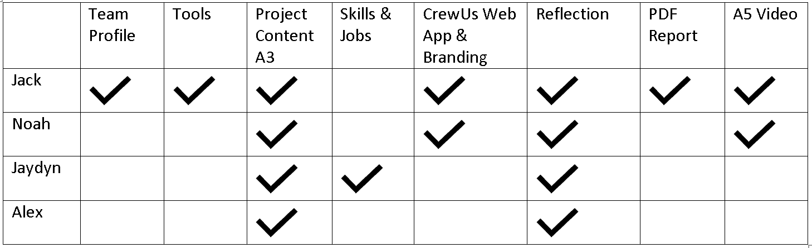

Tools
Assignment Credit: Jack Harris
Overview
For this assessment we have used several fantastic tools to function as an effective team, these have included MS Teams, Trello, and GitHub for version control. Over the last couple of weeks, we have efficiently used these tools to assist us in the creation of this assessment and function amazingly well as a team.
For the final submission and Website hosting we are using GitHub.io
** A Key difference between A3 & A2 was the choice not to use trello for project management, due to how well we are working as a team and the new level of confidence that we have trello was deemed to not be required this time! **
Tools Used
- Microsoft Teams
- Github
- Github Pages
Quick Links
Assignment Credits

Microsoft Teams - Meetings
FinalMeeting 27/05/2021
- Recording - ADD
- Agenda - ADD
- Actions
- Webcams
- ScreenSharing
- 00:00:00s
Github Commit Overview & Reflection
Just like our A2 assessment with GitHub we focused on having one main person submit commits, this has worked extremely well, and we can see that we have over 67 commits made to forked A2 repository. Each of these commits has also been extremely well-crafted back jack and he has provided clean dot point capacity. He has also made a real effort to keep his commits small and the change logs relevant.
This allows our GitHub commit log to be clean and easy to review on later viewing. One of the key areas from improvement from A2 was having large amounts of work be conducted between commits, here we can see that jack has really made a effort to make quick clean commits that reflect the small changes made between versions.
Example screenshots taken from GitHub commit logs

MS Teams - Team Communication & Reflection
Our use of MS Teams has been extremely good for A3 voice communication, we have performed more in depth and more frequent meetings to greater align our team. We can see in review of these screenshots and the MS Teams data that we have had several fantastic number of meetings.
One of the areas that we have not performed well is in MS Teams written communication, looking back at our MS Teams logs and data we can see that we are lacking in our written communication, I believe this was due to our great and frequent verbal communication that negated the need for large scale text communication. That being said I think its still an area for improvement and if we had a A6 assessment I could have the group focusing on that aspect of MS Teams usage.